How it works
Grow. Ring. Pop.
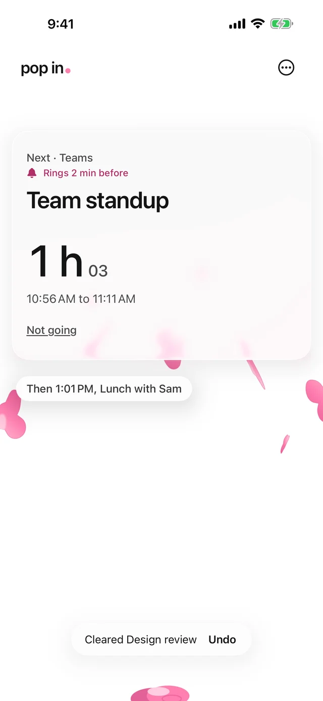
Zoom, Teams, Google Meet, Webex and more. It finds the link and gets you in.
Honest about the alarm
Loud when it matters.
When your phone is locked, the alarm fills the screen with Dismiss and Join (or Open when there's no link). When you're using your phone, iPhone shows it as a banner at the top; tap it for the bubble.
That's how every iPhone alarm works, Apple's own Clock included. Pop In uses the same alarm system, so it rings through silent mode and Focus.
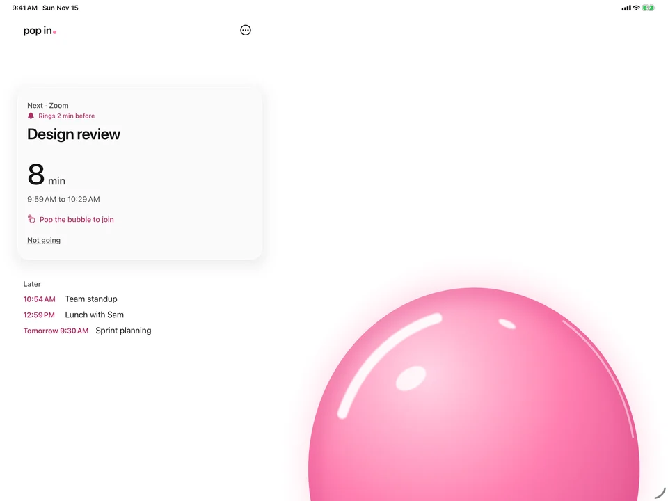
Running late
The bubble notices.
Let the start time slip and more bubbles bud off, one after another, until the whole screen is bubble. It's hard to ignore, and a little funny.
Missed one while you were in another call? A quiet "Also missed" line keeps its Join handy.
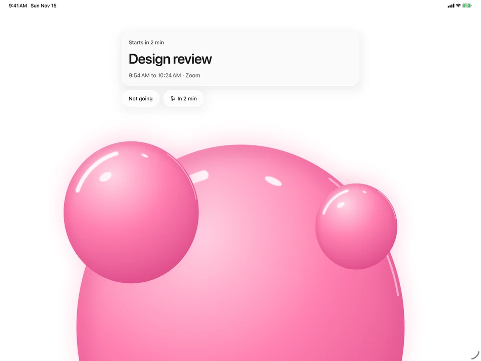
Free, and it stays free
Every alarm, no catch.
Pop In Pro
Twelve themes, and more all year.
Each theme has its own look and its own pop: a rainbow that bursts into confetti, a black glass fortune ball, a lava lamp, a fishbowl, a disco ball.
New themes arrive through the year, timed to the seasons and big games, and they're all included. Six more alarm sounds, ringing 10 minutes early, per-calendar control and desk mode come with it.
$6.99, one time. No subscription.
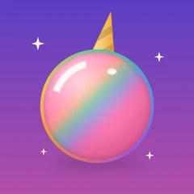
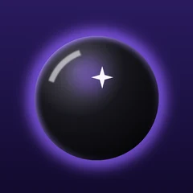
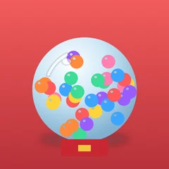
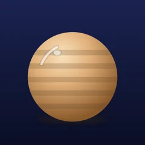
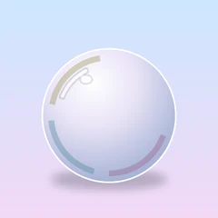
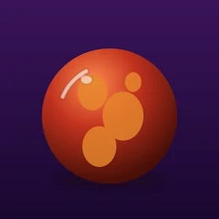
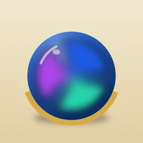
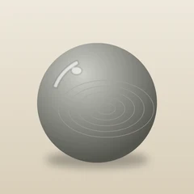
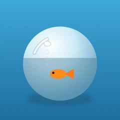
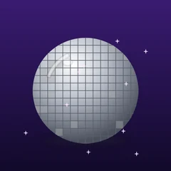
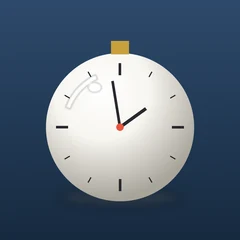
Pop for fun
The minutes before a call, filled.
Open Pop for fun and every theme's bubble drifts by. Play a 30-second target round, popping only the one it names, or pop away the minutes until your next meeting. When it's time, its own bubble floats in. Pop it to join.
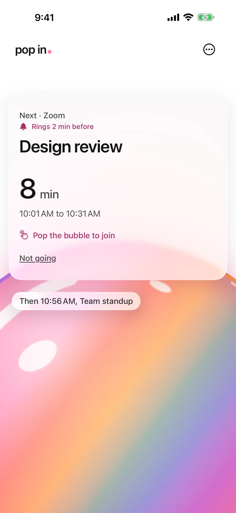
Private by design
Your calendar stays yours.
Never miss the start again.
Free on iPhone and iPad. Pop In Pro is one purchase, yours for good.